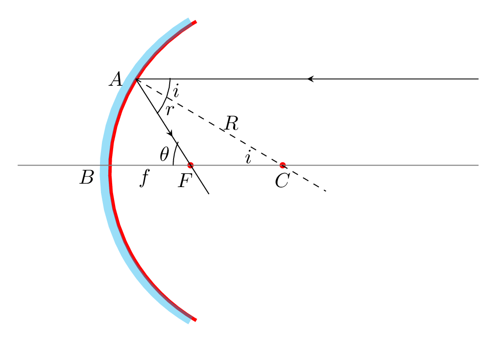
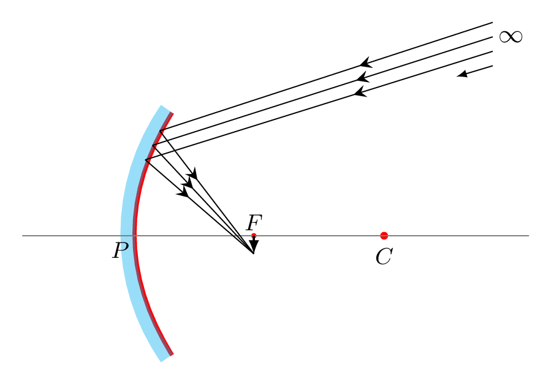
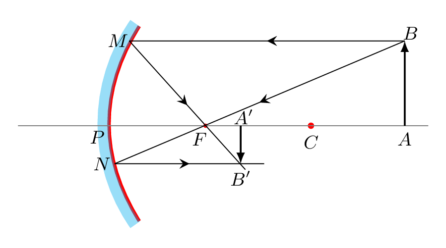
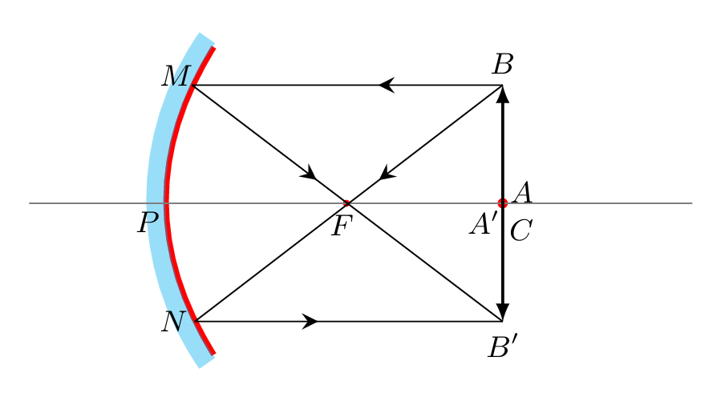
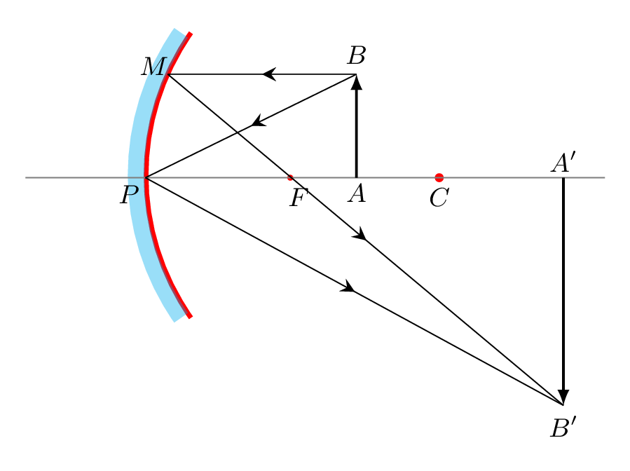
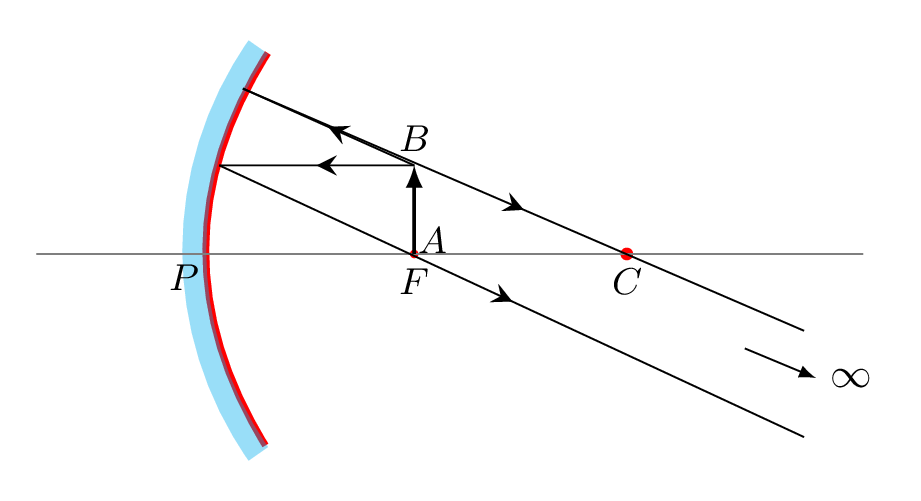
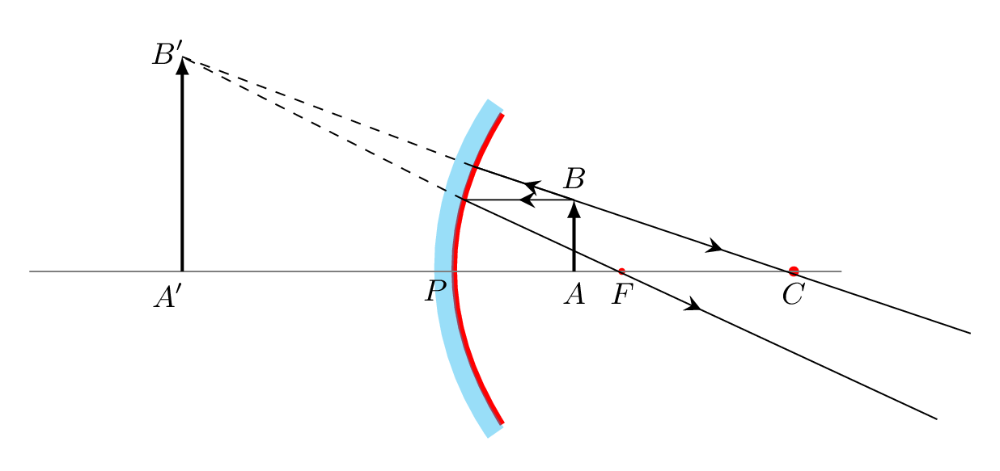
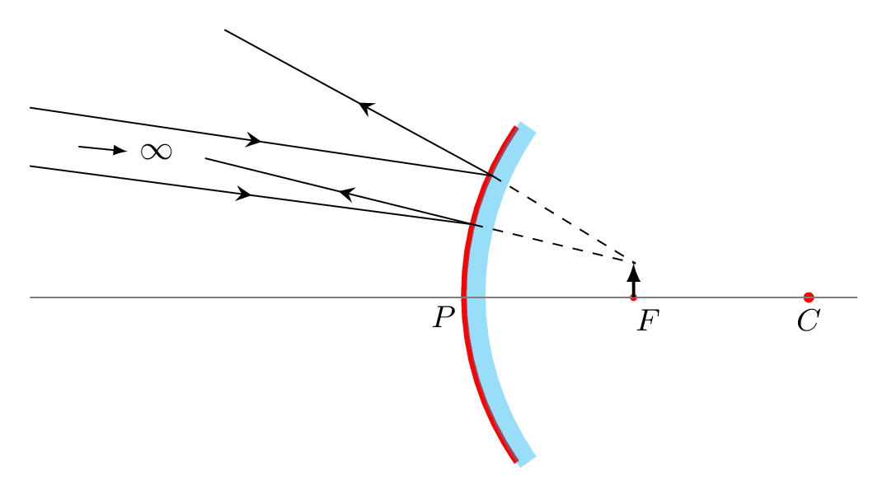
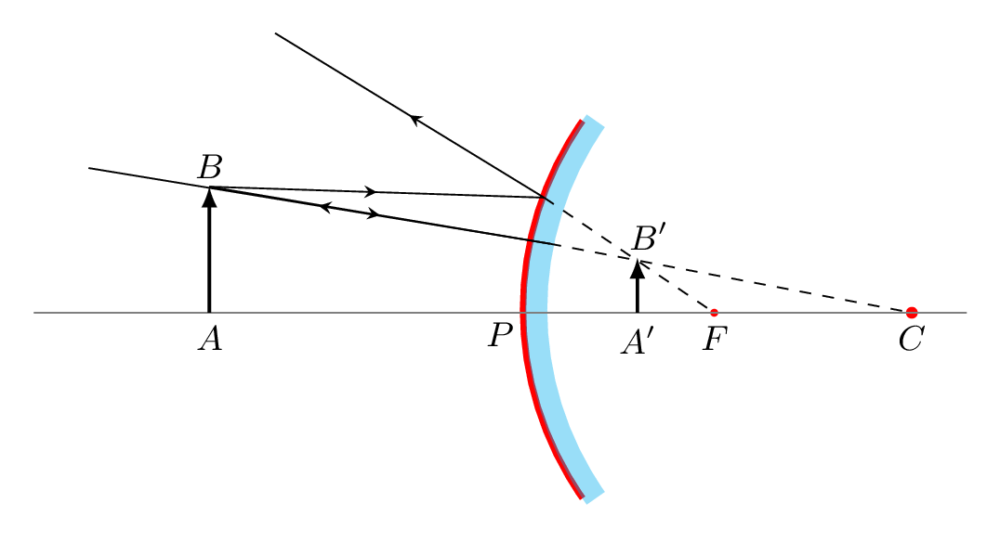

Subsection 5.2.2 Spherical Mirror
Spherical mirror is a part of spherical surface which is polished in such a way that one of its side becomes reflecting surface. If the exterior of a curvature of hollow sphere is coated in such a way that the interior (or cave part) of the surface behaves as reflecting surface then it is called a concave mirror. If the interior of the sphere is coated in such a way that the exterior (or vex part) behaves as a reflecting surface then it is called a convex mirror as shown in Figure 5.2.6.
The center of a sphere of which a mirror is a part is called a center of curvature, C. An imaginary line passing through the center of curvature of a spherical mirror is called the principal axis or optical axis of the mirror. Principle axis is a symmetrical line of the mirror. The point on the surface of mirror through which a principle axis is passing is called a pole, P or vertex of the mirror. The radius of a sphere of which a mirror is a part is called the radius of curvature, R of the mirror. Radius of curvature is a distance between pole of the mirror to the center of curvature of the mirror.
The point on the principle axis through which the reflected rays of all the incident rays prallel to the principle axis must pass or appear to diverge from is called a focus, F and the distance between the pole and the focus is called a focal length, f of the mirror as shown in Figure 5.2.7.(a) and Figure 5.2.7.(b). The size of the mirror is called the aperture of the mirror. If the aperture of a mirror is small then reflected rays of any beam parallel to the principle axis either must pass through or appear to diverge from the focus of the the mirror. In the case of a mirror of large aperture these reflected rays fail to meet at a single focus point, such inability of a mirror to focus all the reflected rays of a parallel incident beam at a single point is called geometrical or spherical aberration of the mirror. The light rays that lie close to the principal axis are called paraxial rays and they only able to meet at a single focus after reflection from the mirror. The rays that lie far from the principal axis are called marginal rays and after reflection they cross the principle axis before focus point. Hence, the reflection of large beam of light from the spherical mirror of large aperture creates a curved shape of light called a caustic curve as shown in Figure 5.2.7.(c). The cusp of caustic curves lie at the focus of the mirror. Spherical aberration can be minimized by using a mirror of small aperture which is smaller compared to its radius of curvature. Parabolic mirror will also minimize such spherical aberration.
Subsubsection 5.2.2.1 Relation between f and R
Consider a concave mirror of small aperture and the incoming parallel ray is close to the principal axis so that angle of incidence i is small. Hence \(\vartriangle CAB\) and \(\vartriangle FAB\) are approximately right angled triangles with the same opposite side AB.

From \(\vartriangle CAB,\)
\begin{equation*}
\tan i = \frac{AB}{BC}= \frac{AB}{R}
\end{equation*}
\([\angle ACF=i, \) an alternate angle.]
\begin{equation*}
\vartriangle FAB, \quad \tan \theta = \frac{AB}{BF} = \frac{AB}{f}
\end{equation*}
but from \(\vartriangle FAC\)
\begin{equation*}
\theta = i+r = 2i,
\end{equation*}
exterior angle is sum of non-adjacent interior angles and \(i=r,\) law of reflection.
\begin{equation*}
\therefore \quad \tan \theta = \tan 2i \Rightarrow \frac{AB}{f}=\frac{2AB}{R} \Rightarrow f=\frac{R}{2}
\end{equation*}
\begin{equation*}
f=\frac{R}{2}
\end{equation*}
Similarly, we can obtain the relation for convex mirror as \(f=-\frac{R}{2}\text{.}\)
Convention 5.2.9.
Sign Rules: Since focus and center of curvature lie behind the convex mirror the following sign conventions will be helpful in analyzing the nature of image formation by the spherical mirrors.
- All distance will be measured from pole of the mirror;
- Radius of curvature and focal length of concave mirror are assumed to be positive and that for convex mirror are negative; and
- Distance for real object or real image is taken as positive and that for imaginary object or image is taken as negative.
Note: The distance between object and pole of the mirror is called object distance and that between image and pole of the mirror is called image distance.
Subsubsection 5.2.2.2 Mirror Formula
An expression which shows the relation between object distance, image distance, and focal length of a mirror is called the mirror formula. To derive the formula following assumptions will be made. The aperture of the mirror is small and the object should be placed on the principal axis.
Let an object AB is placed on the principle axis as shown in Figure 5.2.10.(a). Consider a ray of light BM incident on the mirror parallel to the principle axis and after reflection passes through the focus F and goes along FB’. Another ray from B passes through the focus F, incident on the mirror at N and after reflection meets FB’ at B’. So that A’B’ is the real image of the object AB. Draw perpendicular from points M and N on the principle axis. Now, from similar \(\vartriangle ABF\) and \(\vartriangle PNF\)
\begin{equation*}
\frac{AB}{PN}=\frac{AF}{PF}
\end{equation*}
In similar triangles the ratio of corresponding sides are equal.
\begin{equation}
\text{or,} \quad \frac{h_{o}}{h_{i}}=\frac{u-f}{f} \tag{5.2.1}
\end{equation}
here \(h_{o},\, h_{i}, \,u,\) and \(f\) are size of object, size of image, object distance, and image distance, respectively. Again, from similar \(\vartriangle A'B'F\) and \(\vartriangle PMF\)
\begin{equation*}
\frac{MP}{A'B'}=\frac{PF}{A'F}
\end{equation*}
\begin{equation}
\text{or,} \quad \frac{h_{o}}{h_{i}}=\frac{f}{v-f}\tag{5.2.2}
\end{equation}
\begin{equation*}
\frac{u-f}{f} = \frac{f}{v-f}
\end{equation*}
\begin{equation*}
\textbf{or,}\quad f^{2}=uv-uf -vf+f^{2} \Rightarrow uv=uf + vf
\end{equation*}
Divide both sides by \(uvf\text{,}\) we get -
\begin{equation}
\therefore \quad \frac{1}{f} = \frac{1}{u} +\frac{1}{v}\tag{5.2.3}
\end{equation}
We can obtain the similar formula for convex mirror with the help of Figure 5.2.10.(b). From similar \(\vartriangle^{s} ABC\) and \(\vartriangle^{s} A'B'C\)
\begin{equation*}
\frac{AB}{AC}=\frac{A'B'}{A'C} \Rightarrow \frac{h_{o}}{u+R}=\frac{h_{i}}{R-v}
\end{equation*}
From similar \(\vartriangle^{s} PMF\) and \(\vartriangle^{s} A'B'F \)
\begin{equation*}
\frac{PM}{PF}=\frac{A'B'}{A'F} \Rightarrow \frac{h_{o}}{f}=\frac{h_{i}}{f-v};
\end{equation*}
\begin{equation*}
\text{Hence}\quad \frac{h_{o}}{h_{i}}=\frac{u+R}{R-v} =\frac{f}{f-v}
\end{equation*}
Substituting
\begin{equation*}
R=-2f
\end{equation*}
and solving the above expression, we get -
\begin{equation}
\frac{1}{f} = \frac{1}{u} +\frac{1}{v}\tag{5.2.4}
\end{equation}
Subsubsection 5.2.2.3 Lateral Magnification, m
The ratio of the size of image to the size of object is known as a magnification,
\begin{equation*}
m=\frac{h_{i}}{h_{o}} = -\frac{v}{u}.
\end{equation*}
Negative sign indicates inverted image.
Subsubsection 5.2.2.4 Formation of Image by a Concave Mirror
-
When object lies at infinity: Consider a parallel beam of light coming from an object O at infinity incident on the mirror and after reflection converges on a focal plane to form an image I as shown in Figure 5.2.11. The image is formed at focus and will be real, inverted, and point in size. Using mirror formula, if \(u=\infty\) then \(v=f\text{,}\) hence real, point in size, (as \(m=-f/\infty=0\)) and inverted.
Figure 5.2.11. -
When object lies beyond center of curvature: Consider a ray of light BM is incident on the mirror parallel to the principle axis then after reflection it passes through F along MB’. Another ray BN incident on the mirror through F and meet to MB’ at B’ to form an image AB’ as shown in Figure 5.2.12. From geometry of the figure the image is formed between focus and center of curvature, inverted, real, and smaller in size.
Figure 5.2.12. -
When object lies at center of curvature: From geometry of the Figure 5.2.13, the image is formed at C, inverted, real, and equal in size. Mirror formula \(v= \frac{fu}{u-f} = 2f\text{.}\) If \(u=2f\text{,}\) and \(m=-\frac{2f}{2f}=-1\text{.}\)
Figure 5.2.13. -
When object lies between F and C: From geometry of the Figure 5.2.14, the image is formed beyond C, inverted, real, and magnified.
Figure 5.2.14. -
When object lies at F: From geometry of the Figure 5.2.15, the image is formed at infinity, inverted, real, and highly magnified.
Figure 5.2.15. -
When object lies between F and P: From geometry of the Figure 5.2.16, the image is formed behind the mirror, erect, virtual, and magnified.
Figure 5.2.16.
Subsubsection 5.2.2.5 Formation of Image by a Convex Mirror
-
When object lies at infinity: From geometry of the Figure 5.2.17, the image is formed behind the mirror at F, erect, virtual, and highly diminished.
Figure 5.2.17. -
When object lies on the Principle axis: From geometry of the Figure 5.2.18, the image is formed behind the mirror between F and P, erect, virtual, and diminished.
Figure 5.2.18.